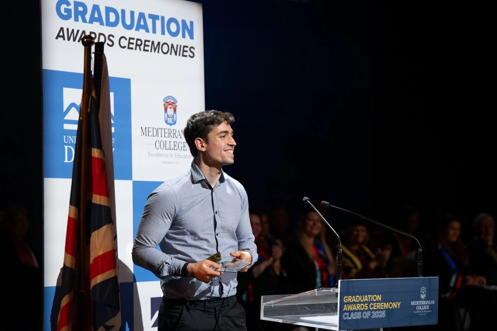
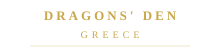
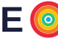
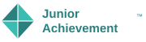
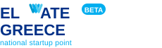

Panos Kokmotos
Co-Founder & COO of Givelink · Based in San Francisco, USA & Athens/Patras, Greece
"My mission is to be useful and contribute to a better tomorrow."
Featured In & Recognised By

Greece
GSEA Top 16
National 1st Place
About Me
Entrepreneur building for social impact
It was my first year of university in Patras, during COVID. I was first in my class, reading constantly, doing everything right on paper. But I wasn't satisfied. I was watching my family struggle to put the basics on the table every day, and something shifted. Grades weren't going to change that. I had to actually build something.
I studied Mechanical Engineering at the University of Patras (Top 3%) — I chose this field because I wanted to understand how things work, build knowledge across many disciplines, and develop real-life applications. I spent a semester at UPC Barcelona on Erasmus, and somewhere in those years found the real question I wanted to answer: how do you help more people access a better future regardless of where they started?
In 2022 I co-founded Givelink, an in-kind donation platform where donors buy the exact goods nonprofits need. No cash abstraction. Real goods, real people, real stories. Today we're scaling globally from San Francisco with a mission to impact 100 million people.
I co-founded Entrepreneurship Talks and now help drive the strategic direction of the team. I serve as a WEF Global Shaper in San Francisco and sit on the Executive Board of Social Impact SF. Everything I do connects back to the same question: how do you make it easier for people with less to access the same opportunities as everyone else?
I get my energy from problems where the stakes are real. I train for HYROX and triathlons at a competitive level because I genuinely believe finishing a hard race and building something you care about take exactly the same muscle. Both demand radical honesty with yourself. I read 40+ books a year not to stay informed, but to think better.

San Francisco, USA & Athens/Patras, Greece
Scaling Givelink globally, 100M people mission
Why I built this site: I don't know who's reading this. Maybe you found me through Givelink, maybe a mutual, maybe you Googled me before a meeting. Either way — I built this because I believe the best things in life start with an unexpected conversation. If something here resonates, reach out. Seriously.
Right Now
What I'm working on today
🕐 Updated
Scaling Givelink Globally
- Building from San Francisco — 100M people mission
- Deepening nonprofit partnerships globally
- Sharpening product-market fit for US expansion
WEF Global Shaper, SF
- San Francisco Hub — civic tech & social impact
- Youth leadership initiatives
- Executive Board, Social Impact SF
HYROX & Triathlon
- Competing at competitive level
- HYROX & triathlon training daily
- Same discipline as building a company
40+ books this year
- Currently: physics, AI & philosophy
- Books as maps, not checklists
Writing a Book
- Theme: being genuinely useful in an AI world
- Why usefulness matters more as AI advances
Vibe Coding for Good
- Building small tools for social impact & everyday usefulness
- Rapid prototyping with AI — ship fast, learn faster
- Exploring where LLMs unlock genuine leverage for nonprofits
Podcasts I Live By
My Story
Key Milestones
Multi-Award Student (2016–2019)
Multiple distinctions in mathematics, physics, astronomy, chemistry and regional academic competitions
Winning those competitions was proof the playing field wasn't completely fixed. It gave me something to hold onto.
University of Patras Journey Begins
Started M.Eng in Mechanical Engineering. Finished 1st in class by the end of 1st semester. Graduated in 2025.
I chose Mechanical Engineering because it was the hardest thing I could think of. Finishing first that semester confirmed something I'd been waiting to confirm about myself.
Co-Founded Citathlon & Cassini Hackathon
Co-founded Citathlon — a mobile app recommending routes for walking, running & cycling based on tourist spots, green spaces, and vehicle safety. Won 2nd place in Greece among 150+ participants at the CASSINI Hackathon (ESA BIC Greece & Corallia), plus a Microsoft for Startups grant. Also started first role as innovation consultant.
First time I built something from scratch. The feeling of creating real value instead of just studying it changed everything.
Read more →European Startup Universe & Atlas Analytics
Project Manager at ESU and contributor at Atlas Analytics on growth campaigns
Co-Founded Givelink & Entrepreneurship Talks
In-kind donation platform. Givelink founded. Entrepreneurship Talks launched. 100+ nonprofits supported.
The moment I stopped asking what I should do with my life and started building the answer. Two companies in one year.
Forbes 30 Under 30 Greece
Greece's top young innovators. Dragons' Den appearance. Top 4 Europe GSEA. 2× Best University Startup Greece.
I read the Forbes announcement three times before it felt real. Then I closed the laptop and went for a run.
$200K Investment Milestone
Closed a $200K investment chapter and prepared next growth stage for US operations
The first time external validation became internal conviction. The mission was real.
$160K Investment & US Expansion
Second investment round of $160K. Expanded to the US. Moved to San Francisco. Completed M.Eng degree.
Landed in San Francisco with no network and a very clear mission. Exactly where I needed to be.
Global Shaper & Social Impact SF Board Member
Contributing through the WEF Global Shapers network and serving on the Social Impact SF board
The work and the identity became the same thing.
Career
Professional Experience
Co-Founder & COO
Givelink
In-kind donation platform letting donors shop the goods nonprofits need most — with step-by-step tracking, photo confirmation, and real impact stories.
- $200K+ donations · 7,500+ contributions · 100K+ lives impacted
- Raised €200,000 Pre-Seed (LATSCO Family Office & V Group)
- 100+ charity partners · partnered with the biggest supermarket chain in Greece · 5+ corporate donors
- Forbes 30 Under 30 Greece · Top 4 Europe GSEA 2023 · 2× Best University Startup Greece
- US expansion Sept 2025: 20+ nonprofits, $10,000+ donated in early US traction
R&D Engineer Trainee
DNV
Supported decarbonization-focused R&D initiatives and translated engineering data into decision-ready insights.
- Analyzed machinery performance datasets with Excel and Power BI to identify efficiency opportunities
- Built repeatable analytics workflows and reporting templates for technical and business stakeholders
- Contributed to early-stage R&D evaluations tied to sustainability and emissions-reduction priorities
Growth Consultant
Atlas Analytics
Drove outbound growth and partnerships for B2B campaigns across Greece, Cyprus, and the UK.
- Executed targeted outreach and qualification flows for consulting, IT, and startup accounts
- Delivered tailored sales presentations to C-level decision-makers and procurement leaders
- Improved campaign conversion through structured messaging tests and market-specific positioning
Social
On LinkedIn & X
Thoughts on entrepreneurship, social impact & building in public.

"I got the degree — but that's not the point."
A personal post about growth beyond titles, consistency through uncertainty, and why character matters more than credentials in the long run.
A behind-the-scenes look at our Dragons' Den journey — showing up prepared, staying true to mission, and turning a TV moment into long-term momentum for Givelink.
A milestone post on being recognized by Forbes 30 Under 30 and what it means for the Givelink mission: scaling impact, earning trust, and building with purpose.
Honoured to be named Forbes 30 Under 30 Greece 🇬🇷
We started Givelink with zero capital and a very simple belief: donors should be able to give the exact thing a nonprofit needs — not just money. 3 years later, 100K+ lives impacted. This is just the beginning.
Things nobody tells you about building a social impact startup:
→ Investors will say "love the mission" then ghost you
→ Your best team members join for vision, not salary
→ Impact metrics matter MORE than revenue metrics early on
→ Every "no" from a nonprofit is data, not rejection
Keep building anyway.
I read 40 books a year. Here's the single mental model that changed how I think:
Your mind is like a Google Map. Most people have huge pixelated areas — things they've never thought deeply about. Reading isn't about information. It's about filling in the map so your decisions get better.
The more accurate your model of the world, the fewer mistakes you make.
What I've Built
Companies
Givelink
In-Kind Donation Platform & App
Donors shop the goods nonprofits need most — step-by-step tracking, photo confirmation, and real impact stories.
Entrepreneurship Talks
Podcast · Co-Founder & Strategic Lead
Long-form conversations with founders, investors and changemakers. Co-founded and now driving strategic direction alongside hosting, with 5+ events, 10+ community partners, and a $100K+ grant secured.
Entrepreneurship Talks
Click to load Spotify player
What I'm Building
AI for Social Impact — Lab
Tools I'm building to make giving smarter. Each app is a standalone AI tool — free to use, built in public.
"What Would $X Do?"
Input any dollar amount + cause area → AI shows 5 concrete impact scenarios across real org types. Converts browsers into donors.
Try it →"Why Should I Give?" Personalizer
Input your values, interests & spending habits → AI builds a personalized case for giving tied to causes you already care about.
Try it →"What Can I Donate?"
Input what you have at home → AI matches to types of nonprofits who need exactly that. The donor side of Givelink, standalone.
Try it →Volunteer Match
Input your skills + availability → AI matches you to local org types and drafts your intro email, ready to send.
Try it →Impact Story Generator
Nonprofits: input a beneficiary before/after + program details → AI writes a donor story, social post, email version, and one-liner.
Try it →First-Time Donor Coach
New to giving? AI walks you through a 5-step personalized plan — where to start, how much, which types of orgs to trust, and how to make it stick.
Try it →Nonprofit Health Checker
Thinking of donating? Describe what you know about the org → AI guides you through the key health signals to check and where to find them.
Try it →Charity Comparison Engine
Input a cause area → AI compares top org types by effectiveness, overhead, reach, and transparency. GiveWell but conversational.
Try it →Community Needs Map
Describe what you're seeing in your community → AI maps underlying needs, identifies gaps, and suggests which org types could help.
Try it →Scam Nonprofit Detector
Something feel off about a charity? Describe it → AI scans for classic fraud patterns and tells you exactly what to check before you give.
Try it →Neighborhood Giving Map
Input your city → AI maps where charitable dollars typically flow vs. where need concentrates. Exposes giving deserts and where local capital matters most.
Try it →Media & Press
Recognition & Coverage
Forbes 30 Under 30 Greece
Listed among the 30 most promising Greek entrepreneurs under 30 in 2024 by Forbes Greece.
Read more →WEF Global Shaper, San Francisco
Member of the World Economic Forum's Global Shapers Community, SF Hub — working to make a positive impact in the world. Dec 2025–present.
Read more →Top 16 Student Entrepreneurs Worldwide — GSEA
One of 16 student entrepreneurs selected globally by Entrepreneurs' Organization at GSEA (Mar 2024). A documentary feature was filmed.
Watch feature →Social Impact Startup of the Year 2026
Recognized as Social Impact Startup of the Year 2026 for Givelink's mission — delivering essential goods to nonprofits with full traceability.
1st Place National — JA Startup Greece
1st Place National Winner at Junior Achievement Startup Greece, qualifying to represent Greece at JA Europe GEN-E (Jun 2023).
Read more →European Young Innovators Top 15 (U26)
Selected among the Top 15 young innovators in Europe (under 26) by the World Summit Awards (WSA) Global.
Read more →Pappajohn Business Plan Competition
1st Place at the John & Mary Pappajohn Competition, awarded by The American College of Thessaloniki (Jul 2024).
Read more →Top Greek Startups 2024
Named among Greece's Top Startups of 2024 by Startupper.gr — the national startup and entrepreneurship media platform.
Read more →2× Best University Startup Greece
Recognized twice as one of Greece's best university startups at national-level innovation competitions.
Circle Future Leaders Fellow
Invited as a Future Leaders Fellow by Circle — a curated network of high-impact young professionals across Europe.
Pegasus Angel Accelerator Fellow
Selected for Pegasus Angel Accelerator — a pre-seed program for Greece's most promising early-stage startups.
Mensa Member · 132+ IQ
Invited member of Mensa International — the high-IQ society — with a score in the global top 2%.
Read more →2nd Place Greece — CASSINI Hackathon
2nd place among 150+ participants at the CASSINI Hackathon (ESA BIC Greece & Corallia, Jun 2021). Co-founded Citathlon using space data, also won a Microsoft for Startups grant.
Read more →E.F.G Eurobank Prize — National Exam Excellence
Awarded by Eurobank (Sep 2019) for the highest Panhellenic exam score at the 3rd High School of Patras, Greece.
National Science & Maths Contest Awards
Top 10 Greece in Astronomy · 1st Patras ×2 in Chemistry · 2nd Patras & Top 50 Greece ×2 in Physics · Honours in Programming & Biology.
Archimedes Excellence — National Maths
"Archimedes" excellence (top 20 Greece) from the Hellenic Mathematical Society · 1st place in Patras for 3 consecutive years.
Read more →3rd Place Greece — Panhellenic Contest Lysias
Bronze medal by Marianna Vardinogianni among 500+ participants — a broad-knowledge competition by Doukas School (Oct 2019).
Press Coverage
Feature on Givelink & Social Innovation
→Four Young Founders Looking to Change Philanthropy in Greece
→Top Greek Startups 2024
→Citathlon 2023 — Innovation Challenge
→17-Year-Old Accepted to 4 UK Universities
→Interview on Givelink and social impact entrepreneurship
→Long-form interview on innovation and impact
→Building Givelink: Bold bets on in-kind giving
→Joint Investment in Givelink by Kourkoulou-Latsi Family Office & Vassiliadis Group
→← Swipe to see more coverage →
Leadership & Community
Dec 2025 – Present
Jan 2026 – Present
2021 – 2023
132+ IQ requirement
Oct 2025 – Present
Programs & Memberships
Academic Background
Education
M.Eng Mechanical Engineering
University of Patras, Greece
Major: Industrial Management · GPA 3.5 · Top 3% of Class
Technology & Engineering Management
UPC Barcelona · Erasmus
International Business · Strategy · Data Analysis (R, SQL, Python) · Grade 8.11
High School Diploma
3rd High School of Patras
100% · 1st of graduating class · Panhellenic scholarship (1st in region)
Writing
Blogs & Insights
Thoughts on entrepreneurship, social impact, AI, and building companies that matter.
How We Built Givelink from a Napkin Idea to Forbes 30 Under 30
I'm working on this piece — subscribe on Substack to get it when it's live.
Subscribe to get it →Why Every Founder Needs to Understand AI Right Now
I'm working on this piece — subscribe on Substack to get it when it's live.
Subscribe to get it →The Google Map Theory of Learning: Read 40 Books a Year
I'm working on this piece — subscribe on Substack to get it when it's live.
Subscribe to get it →Bridging Ancient Wisdom and Modern Kindness
A guest piece for the Investing in Kindness Project — on how timeless philosophical principles apply to building Givelink and the future of social impact.
Read article →Get thoughts on startups, impact & AI directly in your inbox
I write when I have something worth saying — not on a schedule. Join the readers who'd rather wait for signal than get flooded with noise.
Opportunities
Open To
I'm always excited to connect with people building something meaningful. Here's what I'm currently open to:
Partnerships & Collaborations
Joint ventures, strategic partnerships for Givelink, and co-creation with nonprofits and mission-driven companies.
Speaking Invitations
Keynotes and panels on entrepreneurship, social impact, AI, and the future of giving. From TEDx to university events.
Investment Conversations
If you believe in the future of in-kind giving and social impact tech, let's talk about Givelink's next funding round.
Advisory & Mentoring
Early-stage founders building for social good — I love sharing what I've learned the hard way so you don't have to.
Podcast Guests
Entrepreneurs, innovators, and thinkers who'd make a great episode of Entrepreneurship Talks. Reach out!
Just Connecting
Bold people working on hard problems. If you're building something you believe in, I'd love to hear about it.
Probably not the right fit if you're looking for a warm intro without context, a free advisor without skin in the game, or validation for an idea you haven't stress-tested yet.
A Filter
This site is probably for you if…
It's probably not for you if you want a polished pitch deck — that's Givelink.app.
FAQ
Frequently Asked Questions
Givelink is an in-kind donation platform that lets donors shop the specific goods nonprofits need most — from food to hygiene products — with step-by-step delivery tracking, photo confirmation, and real impact stories. Instead of cash donations, you give exactly what's needed, eliminating waste and ensuring 100% impact traceability. Visit givelink.app →
You can book a 30-minute call directly at tidycal.com/givelink/panos. Panos is open to conversations about Givelink partnerships, speaking invitations, podcast appearances, and connecting with founders working on hard problems.
Entrepreneurship Talks is a long-form podcast and community Panos co-founded in 2020, featuring conversations with founders, investors, and changemakers. With 60+ episodes, 350K+ views, 5+ live events, and a $100K+ grant secured, it has become one of Greece's leading entrepreneurship media platforms. Listen on Spotify or YouTube.
Yes — Panos speaks on entrepreneurship, social impact, in-kind giving, AI, and the future of philanthropy. He has spoken at university events, startup competitions, and community forums across Europe and the US. Reach out via email or book a call to discuss your event.
Panos has been named to Forbes 30 Under 30 Greece 2024, recognized as a WEF Global Shaper (San Francisco Hub), reached Top 4 in Europe at GSEA 2023, won the Pappajohn Business Plan Competition, and was selected among Europe's Top 15 Young Innovators by World Summit Awards Global, among other recognitions.
Panos splits his time between San Francisco, USA (where he's scaling Givelink and active in the WEF Global Shapers SF Hub) and Athens/Patras, Greece (where Entrepreneurship Talks and key partnerships are based). He's available for remote conversations globally and in-person meetings in both locations.
Givelink is actively expanding in the US market and is open to conversations with aligned investors and strategic partners — especially nonprofits, foundations, and corporate CSR teams. If you believe in the future of in-kind giving, book a call or email panagiotis.kokmotoss@gmail.com to start a conversation.
Get in Touch
Let's build something meaningful together
Open to collaborations, speaking invitations, investment conversations, and connecting with bold people working on hard problems.